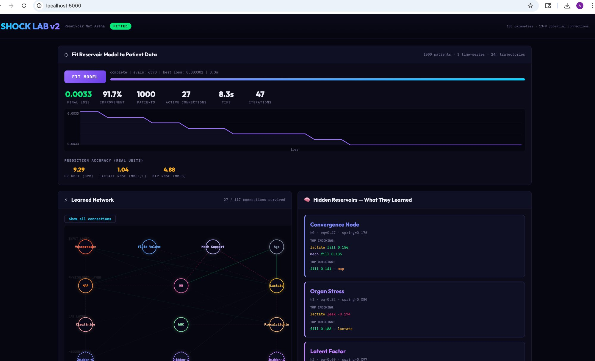
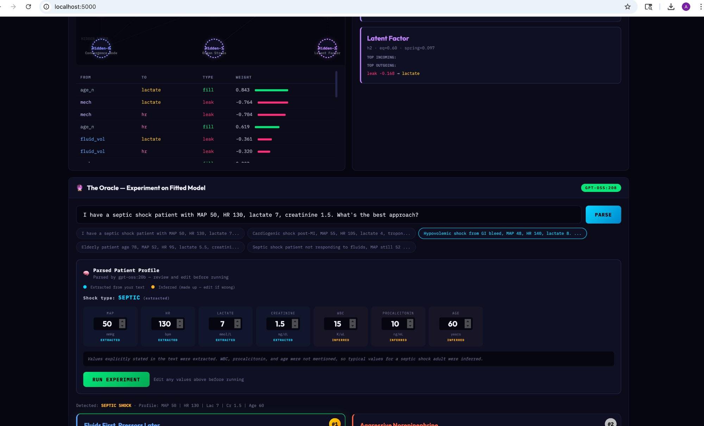
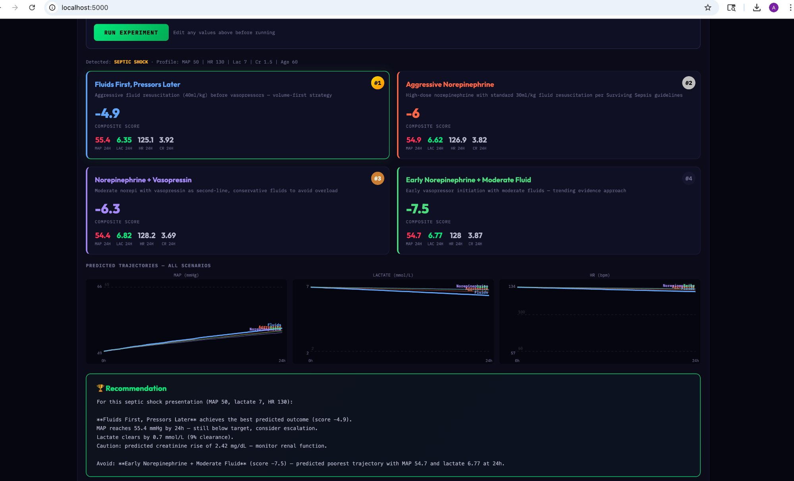

A nonlinear reservoir computing model with learned tipping points that discovers hemodynamic dynamics from patient trajectories — including hidden physiological states and critical thresholds — and lets clinicians experiment with intervention strategies on a fitted digital twin.
Prepared for Dr. Gavin Hickey & Nurse Nicole Kunz
Interpretable
Data-Fitted
Nonlinear Tipping Points
LLM-Augmented
02 / 13
The Problem
Shock management requires rapid, high-stakes decisions with incomplete information.
Black-Box ML
Neural nets predict but can't explain why. No way to inspect or challenge the reasoning.
Static Guidelines
Population-level protocols don't adapt to your patients or your institution's patterns.
What We Want
A model that learns from our data, shows its reasoning, captures nonlinear thresholds, and lets clinicians experiment.
03 / 13
Reservoir Computing Architecture
Every clinical variable is a "reservoir" with spring-to-equilibrium dynamics plus nonlinear tipping forces.
# Linear spring toward shifted equilibrium: state += (effective_eq - state) × spring_rate × dt
# Combined: linear dynamics + multi-channel nonlinear edges
Not a neural network. Coupled differential equations where every parameter — including the tipping thresholds — has a physiological name, a direction, and a magnitude a clinician can read and challenge.
04 / 13
Learned Tipping Points
Biological systems are nonlinear. The model learns WHERE thresholds are, HOW sharp, and WHAT HAPPENS when crossed.
Below + Collapse
MAP drops below autoregulatory threshold → perfusion collapses nonlinearly. Not a gradual decline — a cliff.
Above + Cascade
Lactate exceeds clearance capacity → self-reinforcing spiral. Poor perfusion creates more lactate which worsens perfusion.
Below + Rebound
Compensatory reflexes activate below a threshold — the body fighting back. Tachycardia response, vasoconstriction.
Above + Ceiling
Negative feedback kicks in above a threshold — natural suppression. Baroreceptor reflex, clearance saturation.
Each reservoir has up to 3 tipping channels — multi-edge thresholds. 216 total parameters: 117 linear weights, 18 equilibria/springs, and 81 tipping parameters (9 reservoirs × 3 channels × 3 params each).
05 / 13
Hidden Reservoirs: Discovered Physiology
3 unnamed hidden reservoirs start as blank slates. After fitting, they develop identities.
Organ Stress (h0)
Driven by fluid volume, age, and lactate. Pushes creatinine up and procalcitonin down. Captures organ injury burden.
Inflammatory Burden (h1)
Fed by WBC, lactate, and mechanical support. Inhibited by fluids. Pushes MAP up — the model's mediator axis.
Convergence Node (h2)
Self-inhibiting. Integrates lactate, creatinine, and MAP. Pushes MAP down — a destabilizing feedback loop.
These are continuous, not categorical. They discovered themselves from the data — not pre-programmed shock types.
06 / 13
Data Fitting
216 parameters optimized against 1000 patient trajectories at 6h, 12h, 24h. Two-phase: fast fit on subsample, refine on full data.
86.5%
Loss Improvement
91s
Fit Time
30
Connections
4.95
MAP RMSE (mmHg)
1.04
Lactate RMSE
2
Tipping Points

Loss convergence, prediction accuracy, network with tipping points
07 / 13

Hidden reservoirs, connections, LLM parsing with extracted/inferred
Learned Network
30 of 117 connections survived pruning. The model discovered three distinct hidden states and two active tipping points.
mech → map (fill, 0.207)
Strongest. Mechanical support directly raises MAP equilibrium.
fluid_vol → h1 (leak, -0.206)
Fluids suppress the Inflammatory Burden hidden reservoir.
h1 → map (fill, 0.180)
Inflammatory Burden drives MAP — the hidden mediator pathway.
08 / 13
How Fitting Works
Load Patients
→
Set State (t=0)
→
Simulate 24h
→
Compare
→
Loss
→
Update
216 Parameters
117 connection weights — linear spring dynamics. 18 eq + spring rates — resting states. 81 tipping params — 3 thresholds per reservoir, each with location, steepness, magnitude.
Loss + Regularization
MSE on MAP, HR, lactate at 6/12/24h. L2 on weights kills weak connections. L1 on tipping magnitudes — unused tipping points get driven to zero. Only real thresholds survive.
Why Not a Neural Net?
MLP weight[47][23] = 0.32 means nothing. Here: weight[mech→MAP] = 0.207 and a tipping point at MAP 65 mmHg with collapse dynamics each mean something specific.
09 / 13
The Oracle
Plain language in → structured profile out → review → experiment. Powered by local LLM (Ollama gpt-oss:20b).
Parse: LLM extracted MAP 50, HR 130, lactate 7, creatinine 1.5 from the text. Inferred WBC 12, procalcitonin 10, age 60 — shown in amber.
Experiment: 4 strategies simulated 24h through the nonlinear model. "Fluids First" scored highest at 16.0. MAP recovered to 53.3, lactate cleared 6%.
LLM runs locally through Ollama — no data leaves the building.
The model's tipping points shape the trajectories — they're not just linear extrapolations.

Ranked strategies with nonlinear trajectory predictions
10 / 13
Reading Results
MAP Recovery (40 pts)
Above 65? How quickly? Tipping points mean crossing 65 isn't linear — it's a phase transition the model captures.
Lactate Clearance (25 pts)
Percentage cleared by 24h. If lactate is above a learned spiral threshold, the model predicts it accelerates — not just drifts.
HR Normalization (15 pts)
Trending toward 60-100. Compensatory tachycardia has its own threshold dynamics.
Renal Preservation (penalty)
Creatinine rise penalized. The model may learn a renal injury cascade threshold.
11 / 13
What's Real vs Not Yet
Proven
Nonlinear fitting converges with 216 parameters
30 connections + 2 tipping points discovered
3 hidden reservoirs with clinically suggestive names
Fully transparent, editable JSON
Local LLM parses free text with extracted/inferred tracking
Tipping point architecture is extensible to real nonlinear dynamics
Not yet
Synthetic data — planted signal is mostly linear, so tipping points are weak
Real data will be the true test — autoregulatory failure, lactate spirals should produce sharp thresholds
Correlation ≠ causation — confounding by indication
Same pipeline. Do tipping points sharpen? Do hidden reservoirs find real physiology? This is the make-or-break moment.
3
Stress Test the Model
Adversarial scenarios. Edge cases. Cross-validation. Does it overfit? Do tipping points generalize? We test the hell out of it.
4
Clinical Review + Team
Clinicians inspect every connection and tipping point. Name hidden reservoirs. Critical care, biostatistics, data engineering, regulatory.
13 / 13
experimental — march 2026
The model is interpretable. The parameters are learned. The tipping points are discovered. The clinician is in control.
A prototype on synthetic data. 216 parameters. 3 hidden reservoirs. Multi-channel tipping points. The architecture is real. Does it hold against actual patient outcomes?